01获取与安装
两种形态：绿色便携版（免安装）与安装版（推荐，支持应用内在线更新）。
下载地址（三平台内容一致，任选其一）
| 平台 | 下载入口 | 说明 |
|---|---|---|
| GitCode（推荐） | gitcode.com/JinFengjian/moni-tiku → Releases | 国内节点，下载最快（实测 90MB 约 15 秒） |
| GitHub | github.com/lingsheng24/moni-tiku → Releases | 国际站点，国内访问可能较慢 |
| Gitee | gitee.com/lingsheng24/moni-tiku → Releases | 第三个下载备份站（不参与在线更新） |
选择安装包
| 文件 | 特点 |
|---|---|
MoniTiKu-Setup-x.y.z.exe 安装版 | 双击安装，全中文向导，自动创建桌面/开始菜单快捷方式，支持应用内「检查更新」一键升级 |
MoniTiKu-Portable-x.y.z.exe 便携版 | 免安装单文件，双击即用；不支持在线更新，需手动下载新版替换 |
网页版（零安装体验）
不想装软件？直接双击项目里的 模拟题库-Web版.html（Chrome / Edge 打开），功能与桌面版基本一致，数据保存在浏览器里。差异是：PDF/DOCX 解析需联网加载组件、联网搜索受浏览器跨域限制只能在浏览器中打开搜索页。以下教程截图均来自与桌面版共用同一界面的 Web 版。
02三分钟上手
软件的核心工作流只有一条主线：
- 导入文档：进入「文档管理」，把 PDF / DOCX / TXT / MD 学习资料导入（也可直接粘贴文本）。
- 配置 AI 接口（可选但强烈推荐）：到「系统设置 → AI 接口」填入 API Key。没有 Key 也能用「本地快速出题」，但 AI 出题质量与题型丰富度远胜本地模式。
- 生成题目：在「AI 生成题目」页选文档、题型、难度，点生成，题目自动带答案、解析、知识点和原文出处。
- 开始练习：进入「答题练习」抽题作答，客观题即时判分；做错的题自动进「错题本」，也可一键加入记忆曲线复习队列。
03界面总览
启动后进入「首页总览」：文档数、题库题数、累计练习、错题数一目了然，还有今日复习提醒与总体正确率。
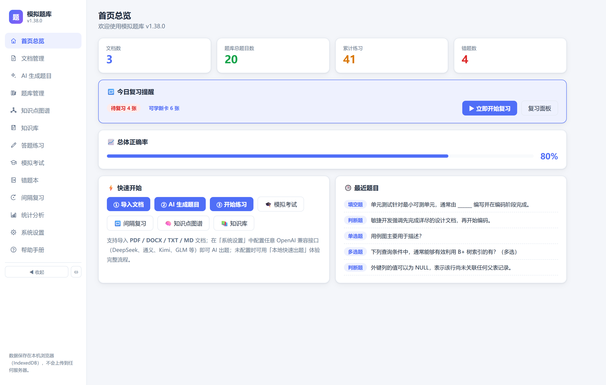
左侧导航栏从上到下依次是全部功能模块；底部「◀ 收起」可把导航折叠成纯图标模式，给正文腾地方。首页「快速开始」卡片就是第 02 节那条主线的快捷入口。
04文档管理与科目
文档是出题的素材来源。支持 PDF / DOCX / TXT / MD 四种格式，也可以直接粘贴文本。
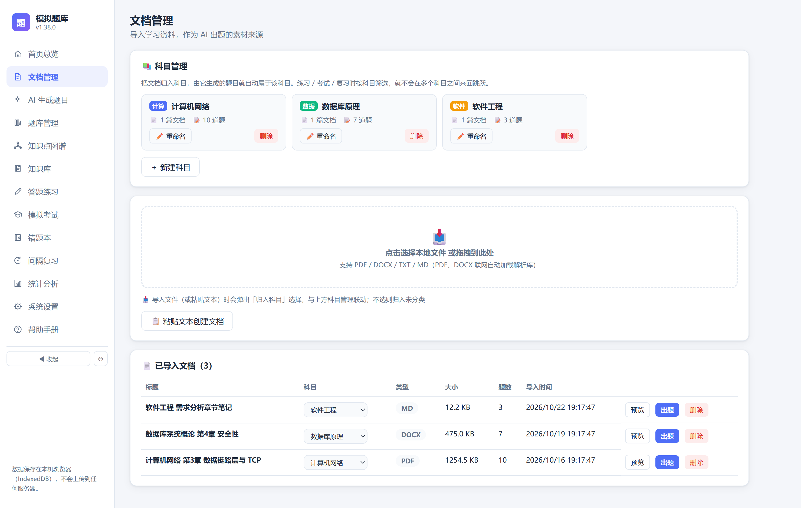
导入文档
- 点击导入区选择文件（桌面版支持拖拽），弹窗中选择「归入科目」；
- 没有合适的科目？先在上方「科目管理」点「＋ 新建科目」，例如：计算机网络、数据库原理；
- 导入完成后列表会显示科目、大小、已出题数，随时可以点「出题」直接跳转生成页。
为什么要用科目
文档归入科目后，由它生成的题目自动继承科目。练习、考试、错题本、复习、图谱全都支持按科目筛选，多科资料混在一个题库里也不会互相干扰。科目在「文档管理」和「系统设置」两处都能管理，实时联动。
05AI 生成题目
内置 5 种题型（单选 / 多选 / 判断 / 填空 / 简答）× 三档难度，生成的每道题都附带答案、解析、知识点标签和原文出处。
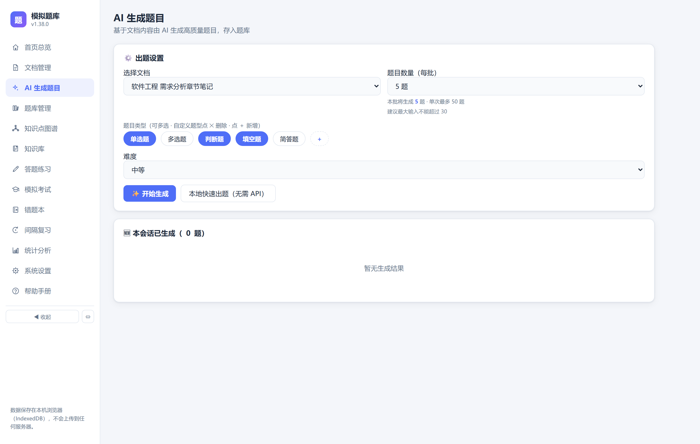
操作步骤
- 选择来源文档（或全部文档）；
- 勾选题型（默认单选 + 判断 + 填空），点题型区的 ＋ 可以自定义新题型，题型上的 ✕ 可删除自定义题型；
- 选择难度与每批题数，点「生成题目」；
- 生成完毕后点「去题库查看」直接检查成果。
没有 API Key？
可以用「本地快速出题」：从文档中抽取关键句生成填空 / 判断题，完全离线免费，适合快速建库，但题型和质量不如 AI。API 配置方法见第 14 节。
06题库管理
所有生成题目的总仓库，支持搜索、组合筛选、在线编辑、批量删除与导出。
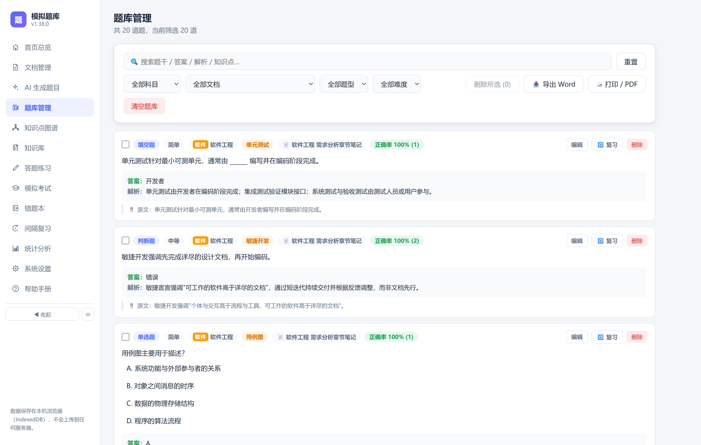
- 搜索：输入关键词即时过滤题干 / 答案 / 解析 / 知识点；
- 筛选：科目 × 文档 × 题型 × 难度四维组合；
- 编辑：点「编辑」可改题干、选项、答案、解析与知识点；
- 🔁 复习：把单题加入记忆曲线复习队列（见第 10 节）；
- 导出：右上角「📤 导出 Word」「🖨 打印 / PDF」把筛选结果变成可打印材料。
07答题练习
从题库抽题作答，客观题即时判分，简答题 AI 语义判分。
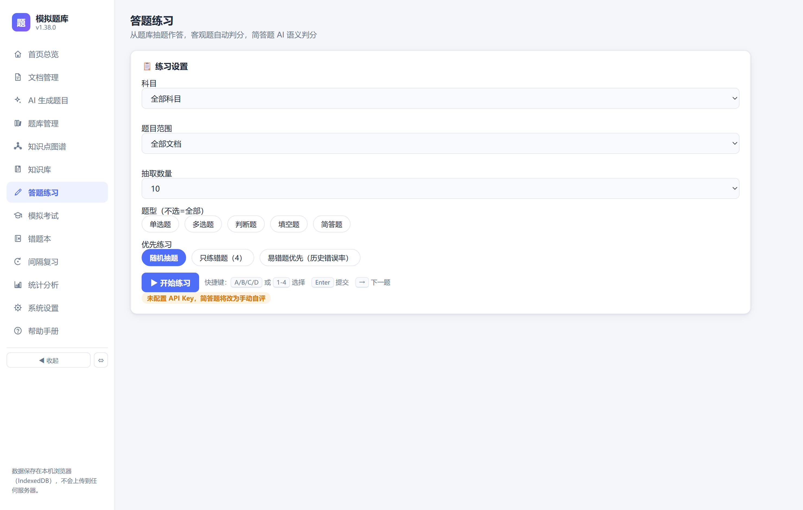
「优先练习」三种模式：随机抽题（默认）、只练错题（配合错题本）、易错题优先（按历史错误率排序，错的多的题先来）。
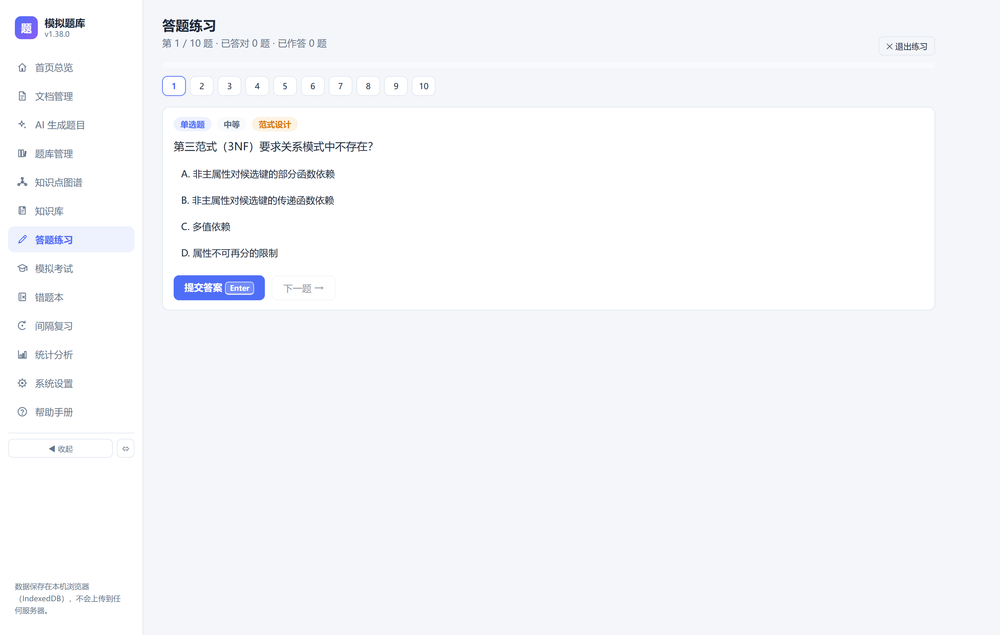
- 顶部题号导航：答对的变绿、答错的变红，点击可来回跳题；
- 键盘快捷键：A–D / 1–4 选择选项，Enter 提交，→ 下一题；
- 提交后立即显示对错与解析；简答题由 AI 判断语义是否等价（未配 Key 时改为自评）；
- 答错的题自动收入「错题本」；开启「练习答错自动入队」后还会自动加入复习队列。
08模拟考试与组卷导出
按条件组卷、限时答题、统一批改、生成成绩报告；还能把同一套组卷条件直接导出成可打印的 Word / PDF 试卷。
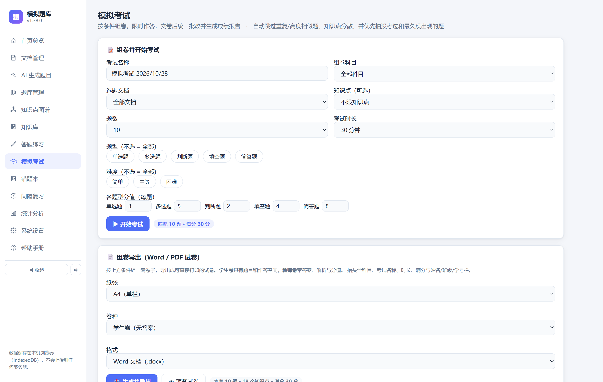
考试流程
- 设定组卷条件与各题型分值，点「▶ 开始考试」；
- 顶部倒计时（最后 5 分钟变红，到点自动交卷），下方答题卡显示已答 / 未答 / 标记待定；
- 交卷后统一批改：客观题自动判分，简答题 AI 判分或自评；
- 错题自动进错题本，成绩写入历史并计入统计。

「考试历史」里可以回看每份报告、查看成绩趋势图、导出成绩单 HTML。
组卷导出（Word / PDF 试卷）
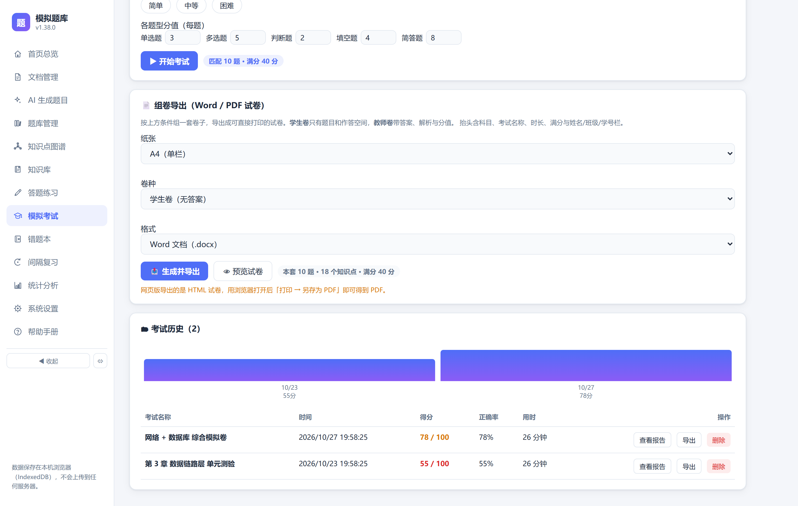
| 选项 | 可选拼合 |
|---|---|
| 纸张 | A4 单栏 / A3 两栏（标准试卷版式） |
| 卷种 | 学生卷（只有题目和作答空间）/ 教师卷（带答案、解析、分值） |
| 格式 | Word 文档（.docx）/ PDF |
试卷抬头自动包含科目、考试名称、时长、满分与姓名 / 班级 / 学号填写栏；填空与简答题自动预留作答空行。导出前可点「👁 预览试卷」先看排版。
09错题本
练习和考试中做错的题自动收录，支持重练、写笔记、一键全部加入复习队列。
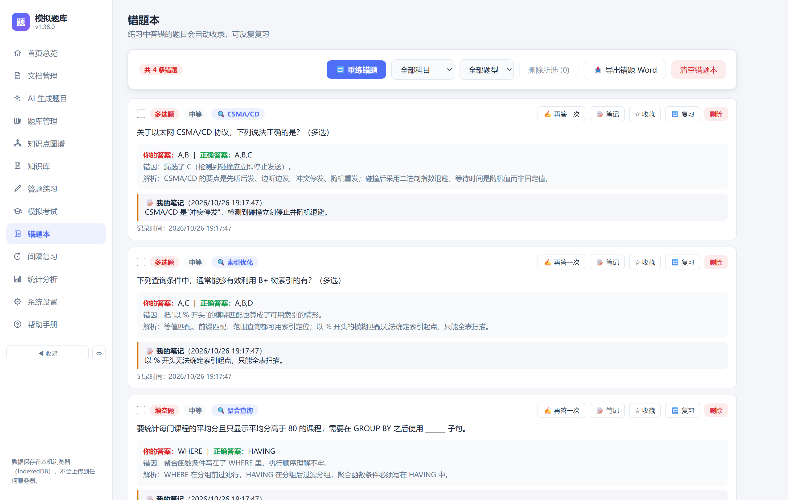
- 重练答对后自动移出错题本（可在系统设置关闭）；
- 可给错题写错题笔记，笔记会同步汇总到「知识库」（见第 13 节）；
- 「全部加入复习」把所有错题塞进记忆曲线队列，考前冲刺利器。
10间隔复习（SM-2 记忆曲线）
把题目变成记忆卡片，按遗忘曲线自动排期，用最少的重复次数把知识刻进长期记忆。
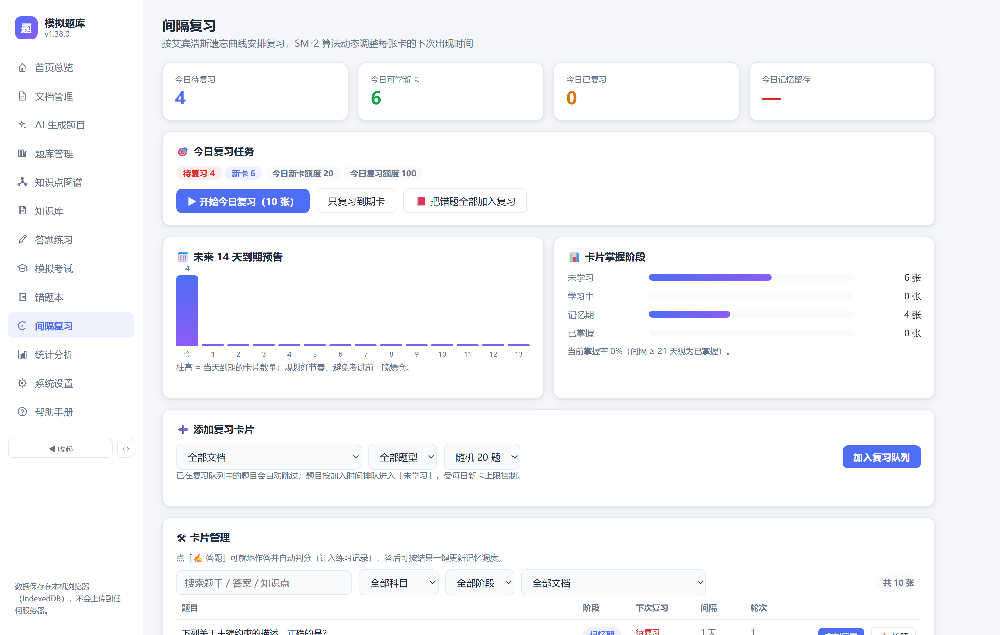
怎么用
- 加卡：题库里点「🔁 复习」、错题本「全部加入」，或开启「练习答错自动入队」让错题自动进来；
- 每日队列：系统只把「到期卡 + 受每日上限控制的新卡」放进今天，避免一上来几百张；
- 复习：点「开始今日复习」进入卡片模式——空格 显示答案，然后按记忆情况自评：
| 评分 | 快捷键 | 效果 |
|---|---|---|
| 忘记 | 1 | 轮次清零，10 分钟后在本轮重现 |
| 困难 | 2 | 间隔微调缩短（上次间隔 × 因子 × 0.6） |
| 良好 | 3 | 正常推进（1 天 → 3 天 → 之后按因子递增） |
| 简单 | 4 | 加速推进（4 天 → 8 天 → 更长），Esc 退出 |
每个按钮上会预览「多久后再来」。间隔满 21 天的卡片自动标记为「已掌握」。柱状图显示未来 14 天每天到期的卡量，方便提前调剂、避免某天爆仓。
11统计分析
练习数据一览：正确率分布、近 7 天练习量，找出薄弱题型。
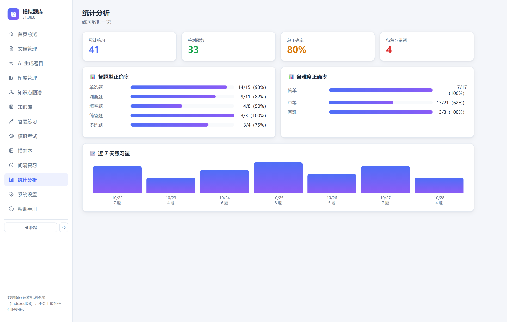
哪类题型正确率低就重点补哪类——回到练习页用「题型筛选 + 易错题优先」定向加练即可。
12知识点图谱
所有题目按知识点聚合成一颗可拖转的 3D「知识星球」，关系近的知识点自动聚成一簇，薄弱点一目了然。
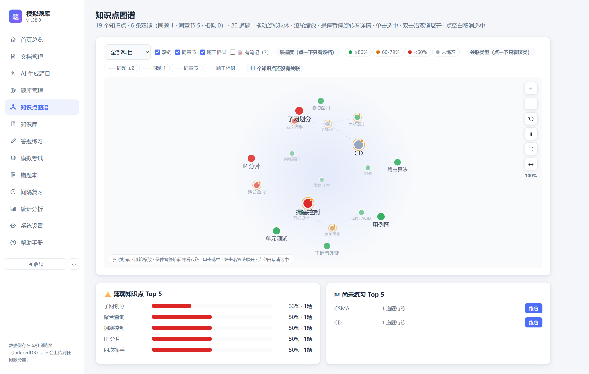
| 操作 | 效果 |
|---|---|
| 拖动 | 旋转球体（松手带惯性），空闲时自动缓慢自转 |
| 滚轮 | 缩放（50% ~ 320%） |
| 悬停 | 节点高亮并显示名称 |
| 单击 | 选中知识点，下方展开题目列表，球体自动把它转到正面 |
| 双击 | 聚焦放大该知识点 |
节点颜色 = 掌握度（≥80% 绿 / 60–79% 橙 / <60% 红 / 灰 = 未练习）。下方「薄弱 Top5」「尚未练习 Top5」点击即可定位并一键专项练习；顶部还能勾选只看双链、同章节或「有笔记」的知识点。有笔记的节点带琥珀色光点，点击详情卡可直接查看 / 编辑笔记。
13知识库与联网查询
四类内容统一沉淀：知识点笔记、错题笔记、自由手记、联网查询收藏。
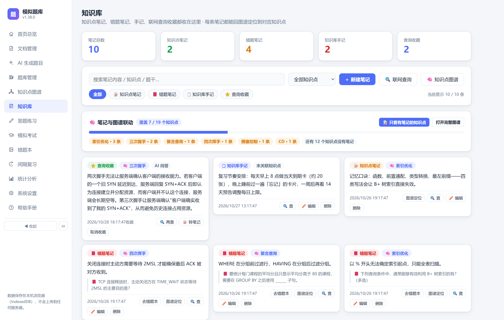
- 📝 知识点笔记：在图谱详情卡里写，与图谱实时联动；
- 📕 错题笔记：在错题本里给错题写备注；
- 🗒 知识库手记：本页直接新建，可关联知识点；
- ⭐ 查询收藏：联网查询时收藏的网页结果与 AI 问答，可「🔍 再查」「📝 转笔记」。
联网查询：不懂就搜，搜完就存
点知识库页的「🔍 联网查询」（或在图谱 / 练习里划选字词后点放大镜图标），弹出双栏面板：
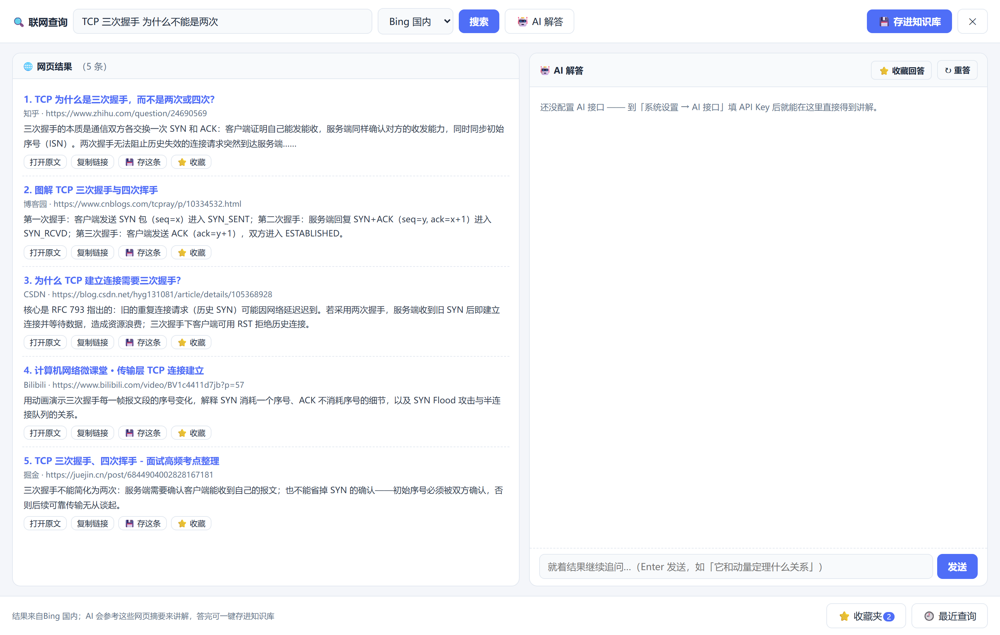
- 支持 4 个搜索引擎 + 智能聚合（三路并发、交替去重），被拦截时自动换引擎；
- 输入时自动弹出搜索联想词（↑↓ 选择，回车搜索）；
- 每条结果可「⭐ 收藏」进收藏夹（收藏夹就在知识库里）；
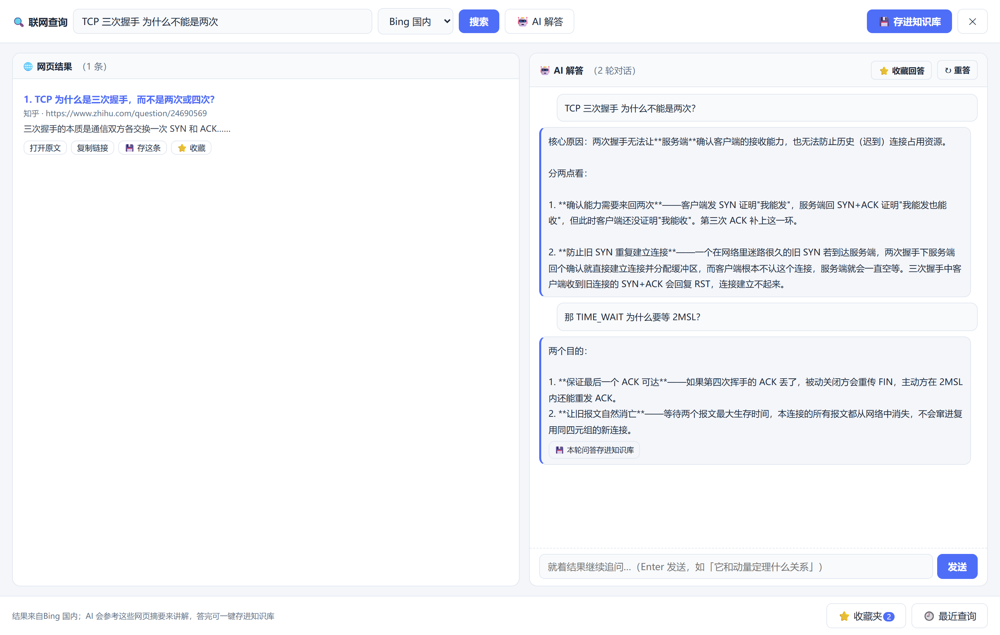
- 点「🤖 AI 解答」，AI 会结合左栏网页摘要用通俗的话讲清概念，避免瞎编；
- 答完后在底部输入框继续追问，AI 记得前面聊过什么，多轮深挖；
- 满意就点「💾 存进知识库」或「⭐ 收藏回答」，不想要直接关掉面板。
14系统设置
AI 接口、主题外观、练习与复习策略、题目类型、数据管理都在这里。
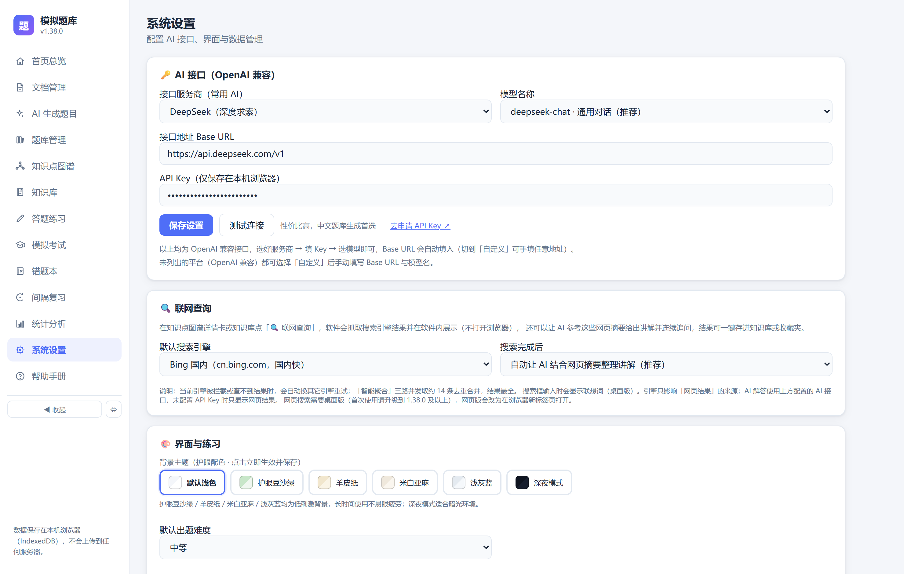
AI 接口配置（一次配好，处处可用）
支持任意 OpenAI 兼容接口，常用服务商直接照抄：
| 服务商 | Base URL | 模型 |
|---|---|---|
| DeepSeek | https://api.deepseek.com/v1 | deepseek-chat |
| Kimi | https://api.moonshot.cn/v1 | moonshot-v1-8k |
| 智谱 GLM | https://open.bigmodel.cn/api/paas/v4 | glm-4-flash |
| 通义千问 | https://dashscope.aliyuncs.com/compatible-mode/v1 | qwen-plus |
| OpenAI | https://api.openai.com/v1 | gpt-4o-mini |
其它常用设置
- 主题：默认浅色 / 护眼豆沙绿 / 羊皮纸 / 米白亚麻 / 浅灰蓝 / 深夜模式；
- 判分方式：AI 语义判分或手动自评；「重练答对自动移出错题本」；
- 复习上限：每日新卡上限 / 每日复习上限，防止任务过重；
- 题目类型管理：自定义题型增删（与出题页实时同步）；
- 数据管理：查看数据文件位置、修改存放路径（指到同步盘即可多机同步）、恢复默认位置。
%APPDATA%\moni-tiku\data.json，是个单文件 JSON——复制这个文件就是完整备份。「数据 → 打开数据文件夹」可直接定位。15更新与常见问题
软件更新（安装版）
点左侧「系统设置 → 软件更新 → 检查更新」（启动时也会自动静默检查）。软件会串行测速 5 条下载线路并自动选最快的一条：
- 发现新版本 → 询问是否下载，确认后才开始（带进度条，下载中可继续使用软件）；
- 下载完成 → 询问是否安装；
- 确认后程序退出 → 静默覆盖旧版 → 自动重启，数据完好无损。
常见问题
| 问题 | 解决 |
|---|---|
| AI 出题报错 / 超时 | 检查 API Key 与 Base URL 是否填对、账户是否有余额；测试连通性后重试 |
| PDF 导入失败（网页版） | 网页版解析库从 CDN 加载，需联网；桌面版本地解析无此问题 |
| 联网查询没有结果 | 确认桌面版为 v1.36.0+；搜索引擎被拦截时软件会自动换引擎重试，也可手动切换引擎 |
| 简答题判分不准 | 判分依赖 AI，请在设置里确认「判分方式 = AI 语义判分」且 Key 有效 |
| 想换电脑 / 多机同步 | 「系统设置 → 数据管理」把数据路径指到同步盘目录，或直接拷贝 data.json |
| 考试中途误关软件 | 重新进入「模拟考试」可继续未完成的考试 |
更多资源
- 软件内置「帮助手册」（左侧导航最后一项），与本教程同步更新；
- 问题反馈与源码：GitCode / GitHub / Gitee 搜索
moni-tiku。